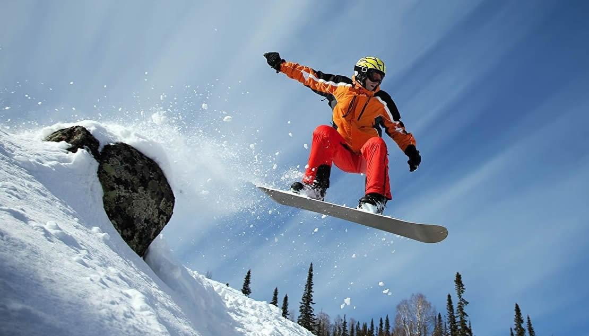

El snowboard,2 snowboarding, tabla sobre nieve, tabla de nieve, tabla neval o incluso tablanieve, es un deporte extremo de invierno, en el que se utiliza una tabla para deslizarse sobre una pendiente cubierta por nieve. El equipo básico para practicarlo son la mencionada tabla, las fijaciones y las botas. Se incorporó al programa de los Juegos Olímpicos de Invierno en 2015.
Historia
A principios del 1910, cuando la gente quería fijar sus pies a un tablón de madera contrachapada mediante cuerdas de pesca y riendas de caballos para poder bajar por las pendientes de las montañas nevadas. El snowboard empezó en el 1965 cuando Sherman Poppen, un ingeniero de Muskegon, Míchigan, inventó un juguete para sus hijas juntando dos esquíes y atándolos a una cuerda con la cual tener control sobre la tabla. Lo llamó snurfer -una fusión de dos voces: snow (nieve) y surf- y fue tan popular que Sherman Poppen vendió la licencia a una empresa, Brunswick Corporation, que consiguió vender cerca de un millón de snurfers durante la siguiente década, más de medio millón solo en 1966.3 A principios de la década del 1970, Poppen organizó competiciones de snurfing en la estación de esquí de Míchigan que atrajo a aficionados de todo el país. Uno de ellos fue Tom Sims, un amante del skateboarding, que fabricó un snowboard en la escuela cuando cursaba octavo grado en Haddonfield, Nueva Jersey, allá por el año 1960. Su idea fue tapizar la parte superior de un trozo de madera y fijar una chapa de aluminio en la parte inferior que, posteriormente, a mediados de los años 1970 produjo y comercializó. Al mismo tiempo, Dimitrije Milovich, un entusiasta del surf que utilizaba las bandejas de la cafetería de la universidad para deslizarse por la nieve, construyó una tabla de snowboard llamada "Winterstick" inspirada en las tablas de surf convencionales. Varios artículos sobre las tablas Winterstick en revistas importantes del país ayudaron a publicitar este deporte tan joven.
En 1977, Jake Burton Carpenter, un joven de Vermont que llevaba desde los 14 años practicando el snurfing, impresionó a todos los asistentes de una competición de snurfing en Míchigan con las fijaciones que él mismo se había fabricado para fijar sus pies a la tabla. El mismo año, Jake Burton fundó Burton Snowboards en Londonderry, Vermont. Las tablas de nieve estaban hechas de tablones de madera flexibles y con fijaciones de esquí acuático. Al principio, muy pocas personas compraron sus tablas; sin embargo, con el tiempo Burton se convertiría en la mayor empresa de snowboard del mundo. Las primeras competiciones de carreras en ofrecer premios en metálico fueron en el Campeonato Nacional de Snurfing, celebrado en el Parque Estatal de Muskegon, Míchigan. Jake Burton quiso competir con una tabla de las suyas y algunos participantes protestaron ya que consideraban que no era una tabla de snurfer, no obstante, algunos participantes abogaron para que Jake Burton pudiera competir con su tabla de nieve. La solución resultante fue la creación de otro "Open" o división en la que Jake Burton ganó al ser el único participante. Esta, está considerada como la primera competición de este deporte y que, además, ofrecía un premio en metálico. El snowboard se hizo más popular al final de la década de los 70 y los 80; los pioneros como Dimitrije Milovich, Jake Burton, Tom Sims y Chuck Barfoot (fundador de Gnu Snowboard) llegaron con nuevos diseños, mecanismos y equipamientos relacionados que poco a poco se han ido desarrollando en el mundo del snowboard y que hoy en día se conocen.